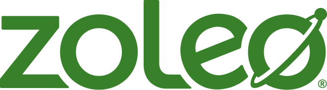
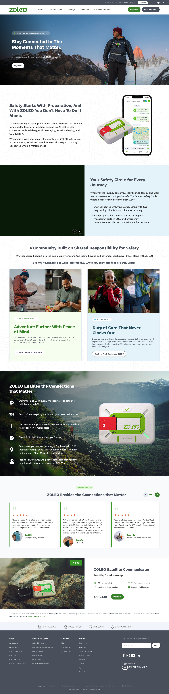

Website strategy & redesign
- Research
- Website strategy
- UX/UI design
- Ecommerce
From product discovery
to direct purchase.
Shaping ZOLEO’s website around discovery and purchase, including a new product detail page designed to support the site’s introduction of ecommerce.